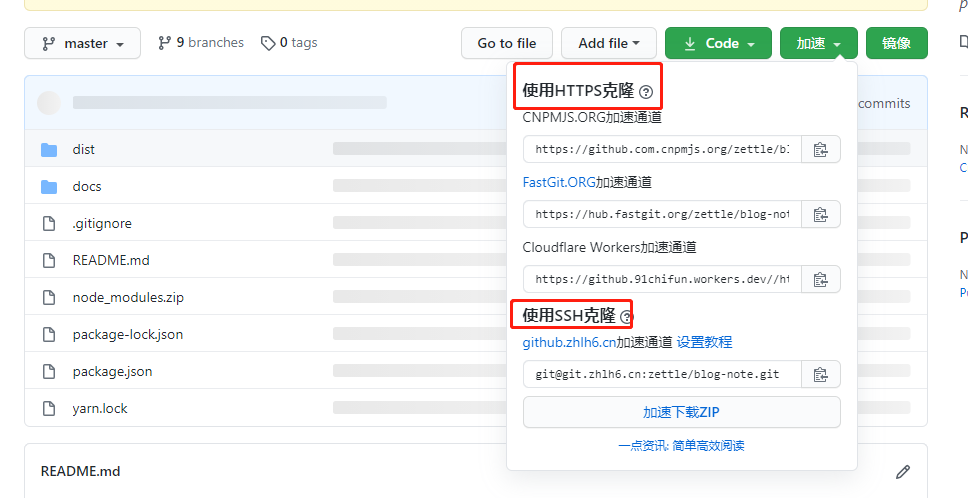
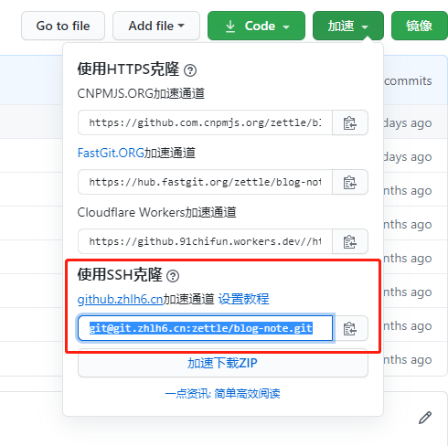

001-github加速
由于github是国外的，所以clone的时候时常太慢导致clone失败，所以需要用过国内的加速
1 安装
安装Github 加速器这个chrome扩展插件
2 在github仓库就可以看到多出来的，选择其中一个通道既可

需要注意的是上面列表中，有的是https，有的是ssh通道 如果选择的是https就没什么好说的，每次push都是输入账号密码 如果是想要选择ssh加速的通道，则需要按照配置下
3 配置ssh并且是加速通道
配置步骤:
启动
git bash进入ssh文件夹
cd ~/.ssh新建config文件，注意没有后缀。内容如下:
Host git.zhlh6.cn HostName git.zhlh6.cn User zettle IdentityFile ~/.ssh/id_rsa执行下面命令
ssh -T git@git.zhlh6.cn看到下面提示则代表配置成功
You've successfully authenticated, but GitHub does not provide shell access这样就clone的时候就可以用
github.zhlh6.cn的链接了，即是ssh通道又是加速的
